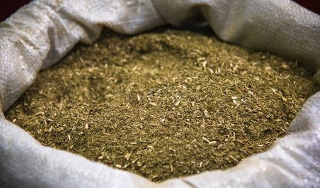
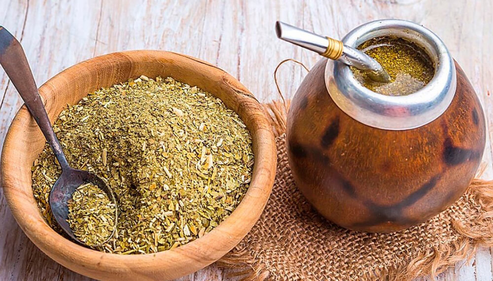

Pasos enla produccion de la yerba mate Chaman
- 1. Semillas: obtención y trabajo.
- 2. Conservación de las semillas.
- 3. Preparación y siembra.
- 4. Plantación del cultivo.
- 5. Cosecha.
- 6. Secado.
- 7. Canchado.
- 8. Estacionamiento.
- 9. Molienda
- 10.Envasado de la yerba mate


Beneficicos de tomar mate
- .Actúa como un poderoso antioxidante.
- .Estimula el sistema nervioso de forma natural.
- .Aumenta la capacidad de concentración.
- .Mejora la resistencia a la fatiga física y mental.